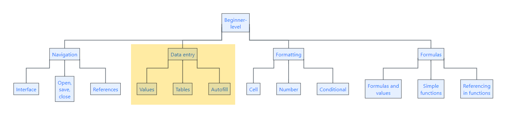

TipForthcoming session(s)
| Booking link | Date |
|---|---|
| Excel practical review (Excel for beginners session 7) | 13:00-14:30 Wed 10th June 2026 |
KIND learning network training materials by KIND learning network is licensed under CC BY-SA 4.0


This session is part of our Excel for beginners course. That’s a series of seven linked sessions, delivered on Teams, that give an introduction to Excel for people working in health and social care. The sessions are:
Together, they aim to help you develop an appropriate set of Excel skills to help your work.

| Booking link | Date |
|---|---|
| Excel practical review (Excel for beginners session 7) | 13:00-14:30 Wed 10th June 2026 |
Another long day at work, and your supervisor is pestering you to create a spreadsheet of population data.
Population Data in an appropriate location| City | |||
|---|---|---|---|
| Aberdeen City | 212,125 (2001) | 222,793 (2011) | 224,021 (2022) |
| Glasgow City | 577,869 (2001) | 593,245 (2011) | 620,756 (2022) |
On reflection, that data doesn’t look quite right.
Just as things are looking tidy, your supervisor comes to you with more data to add
Fife: 349,429 (2001), 365,198 (2011), 371,781 (2022)
Disaster! your supervisor has changed their mind about what should go in the rows, and what should go in the columns.
year
Your data should now look like this:

You can delete any other data from your working out as we won’t need it later on. You might also like to use the Clear formats tool to remove any odd bits of formatting left over from transposing etc.
Your supervisor is now worried that someone will sort parts of the data and break it. You remember that you can use a table to prevent that from happening.
As your supervisor clearly doesn’t know when to stop, they come to you with more data:
Falkirk: 145,191 (2001), 155,990 (2011), 158,404 (2022)
Paste values only, or the Clear formatting tool to make sure the new values look like the existing valuesLet’s make our table easier to read.
year column boldyear columnYour data should now look like this:

From giving you data, your supervisor has now decided to start asking you questions about the data. First, they wonder what the total population was for each of the three years:
Total column to your tableSUM, or using + to add values togethertotal columnAlthough there’s only a minute or two left of the working day, your supervisor is still at it, with what they promise to be the last request: can you calculate an average for each of the three years too:
average column to your tableAVERAGE function to find the average population in each of the three yearsaverage columnWell done for getting through a trying afternoon. Here’s how the spreadsheet should look:

If you’re stuck with the formulas, you can also use these examples.:
total formula is =SUM(population_data[@[Aberdeen City]:[Falkirk]]). These structured references are how modern versions of Excel creates references in tables, and we’ll discuss those in our intermediate-level Excel course.=SUM(C3:F3). Take care that your data starts where this example data does - with the Aberdeen City data in Column C, starting at row 3. You might need to adapt your formula to suit!average formula is =AVERAGE(population_data[@[Aberdeen City]:[Falkirk]])
=AVERAGE(C3:F3) would also work